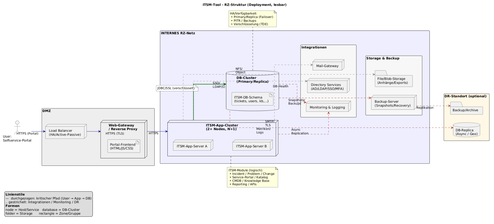

ITSM-System · Komponenten · Funktionen · Rolle im Incident Management
Systemmodellierung & Analyse der Rechenzentrumsstruktur (RZ) für ein ITSM-Tool
Kontext & Ziel
Visualisierung des kompletten Lebenszyklus eines Incidents: Vom Portalzugriff über Ticketanlage im
DB-Cluster bis zu Eskalation, Monitoring und Disaster-Recovery. Durch Integration von Mail-Gateways,
Directory-Services (SSO/LDAP) und Backups wird die Prozesskette konsistent abgebildet.
Das RZ-Diagramm zeigt die ITSM-Kernkomponenten für das Incident-Management: Portal, App-Cluster,
Datenbank, Integrationen. Der DB-Cluster ist das Herzstück, App-Cluster & Integrationen sichern
Funktionalität und Kommunikation.
ITSM-RZ-Diagramm

ITSM-RZ-Diagramm – für Details mit der Lupe über das Bild fahren oder „Groß ansehen“ öffnen.
Incident-Management – Standardablauf
Ein Incident (INC) durchläuft standardisiert folgende Schritte:
Incident-Erstellung:
User meldet Problem über Self-Service-Portal.
Portal sendet Anfrage verschlüsselt an ITSM.
Ticket-Anlage:
App-Server validiert Daten.
Ticket im DB-Cluster gespeichert (inkl. INC-ID).
Zuweisung & Prüfung:
Workflow leitet den Incident an den zuständigen Support.
Bearbeitung & Lösung:
Support löst Incident oder eskaliert.
Lösung und Workarounds werden dokumentiert.
Benachrichtigung:
User erhält Updates via Mail-Gateway.
Status jederzeit im Portal einsehbar.
Abschluss:
Ticket wird geschlossen.
Monitoring überwacht SLA und dokumentiert den Lifecycle.
Diagramm – Detailansicht
ITSM-Komponenten im Vergleich
Komponente
Beschreibung
Funktion im ITSM
Rolle im Incident-Management
User (Self-Service-Portal)
Endanwender:innen melden Incidents oder prüfen den Status.